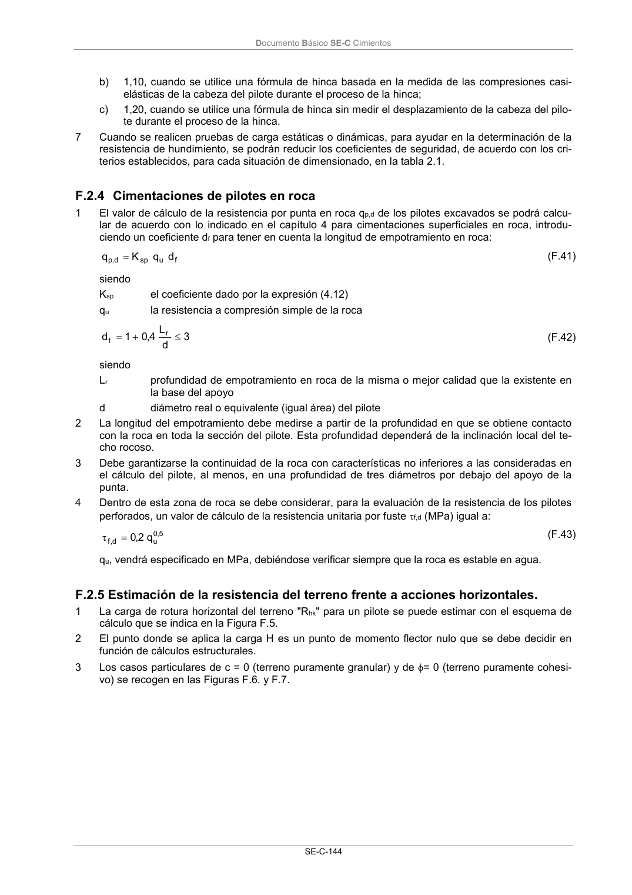
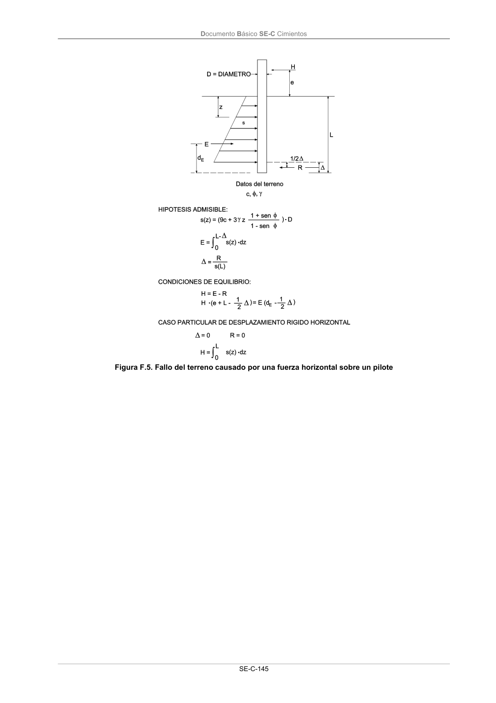
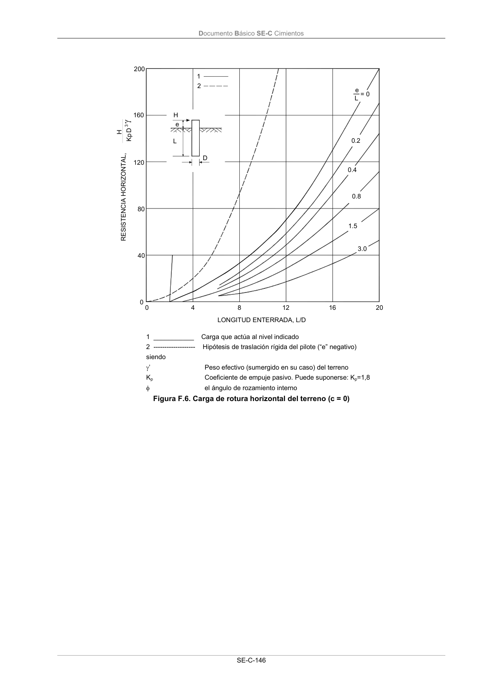

DB-SE-C · F.2.5 Estimación de la resistencia del terreno frente a acciones horizontales. · versión 2019-12-20 · capa oficial
Formatos: JSON compacto · Markdown · PDF fuente
Ámbito del documento · texto del ámbito · documento y tablas
ID técnico a0261 · PDF pág. 149-151 · jerarquía no validada por persona · contrastado con el literal de la página 149 (candidato tipográfico); no validado por persona · padre: a0258
F.2.5 Estimación de la resistencia del terreno frente a acciones horizontales. 1 La carga de rotura horizontal del terreno "Rhk" para un pilote se puede estimar con el esquema de cálculo que se indica en la Figura F.5. 2 El punto donde se aplica la carga H es un punto de momento flector nulo que se debe decidir en función de cálculos estructurales. 3 Los casos particulares de c = 0 (terreno puramente granular) y de = 0 (terreno puramente cohesi- vo) se recogen en las Figuras F.6. y F.7. Documento Básico SE-C Cimientos SE-C-145 Figura F.5. Fallo del terreno causado por una fuerza horizontal sobre un pilote Documento Básico SE-C Cimientos SE-C-146 4 0 8 12 16 20 0.2 0.4 0.8 1.5 3.0 RESISTENCIA HORIZONTAL, D Kp 3 LONGITUD ENTERRADA, L/D e L D e L= 0 200 160 120 80 40 0 1 2 H H



PDF fuente redistribuible: copia fiel enlazada en esta página (SHA256 verificado).